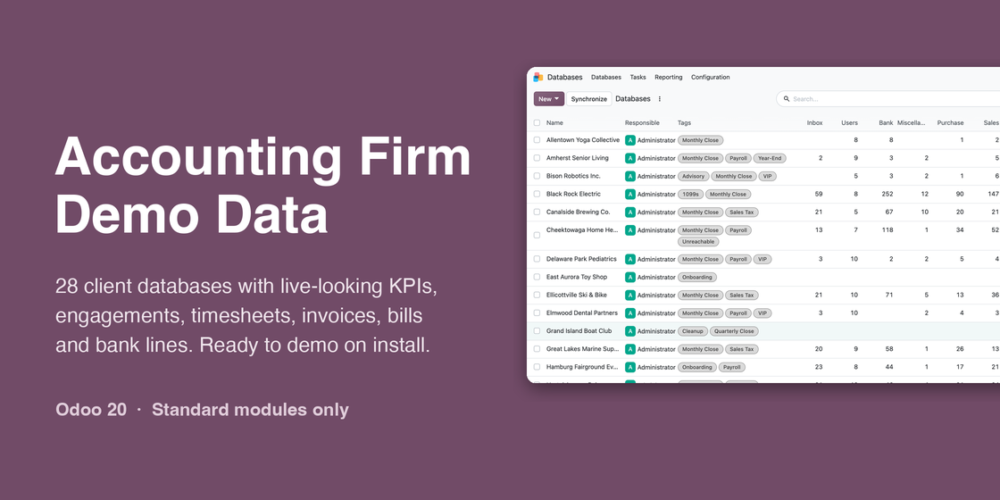
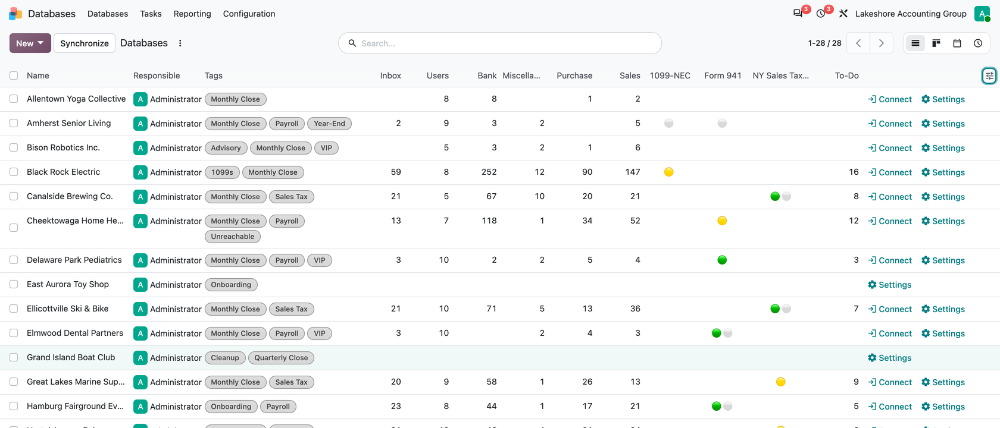
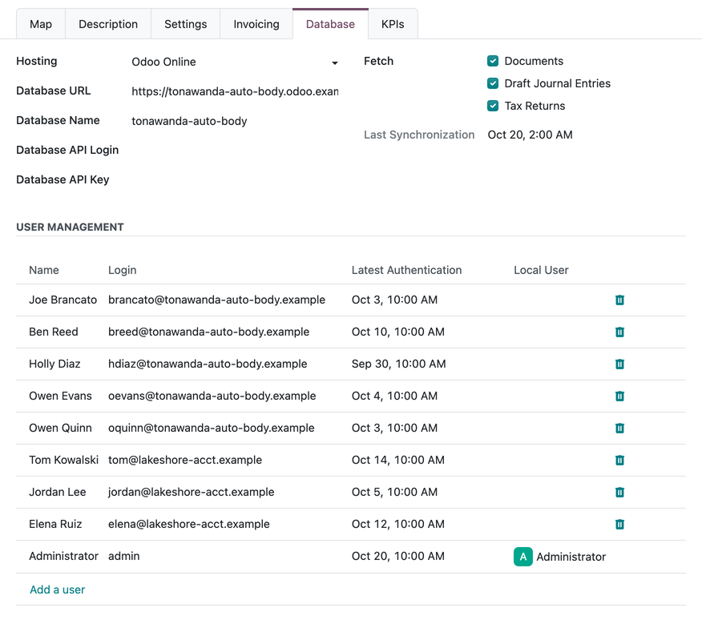
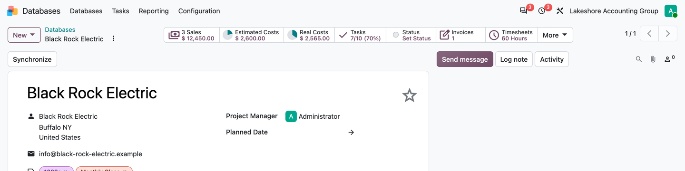
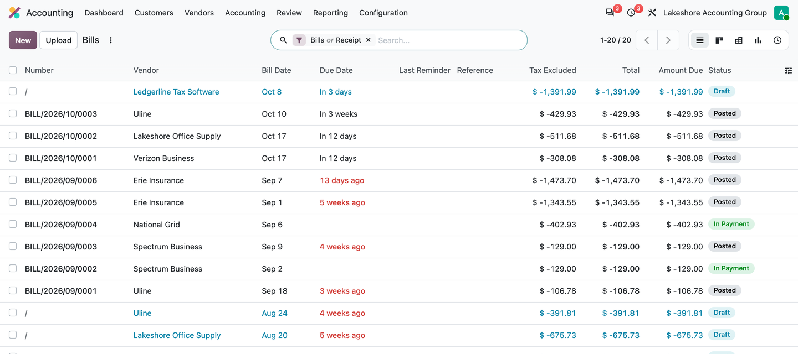

Install one module and get a believable accounting firm: client databases with KPIs, engagements, timesheets and the firm's own books, all dated around today.

Databases app: every client with its KPIs (columns switched on from the column menu).

A client record: connection details, fetch switches and the users found on the client.

Engagement profitability: sales, estimated costs, real costs, invoices and timesheets per client.

The firm's vendor bills: drafts, bills to review and paid bills.
